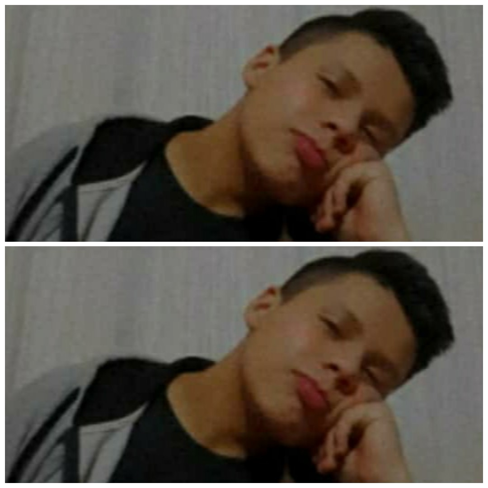

Mi nombre es Carlos Erickson Andre Olivares Conza con 18 años de edad, he nacido en Arequipa y soy muy risueño.

♦ Sobre mi:
Soy una persona que le agrada conocer nuevas experiencias, ayudar a los demás, me encanta los animales, tengo valores como Respeto, Puntualidad, Responsabilidad esos son algunos valores resaltantes en mi. Lo que me apasiona es aprender aún más de la tecnologia de una manera mas
eficiente, ayudar en muchos ambitos a los demás de la mano de esta y poder crear aplicaciones que puedan utilizar para una mejorar el rendimiento que se este solicitando. Tambien me gusta el deporte en especial el futbol, uno de mis sueños era llegar a ser jugador profesional, pero uno no sabe que es lo que pueda suceder en minutos o dias, perdiendo la esperanza en tus sueños. Tambien me apasiona la musica, mis artistas favoritos son argentinos y algunos peruanos y ecuatorianos.
♦ Tecnologias y Lenguajes de Programacion:
► Python
► Java Script
► SQL
► HTML
♦ Formacion Profesional:
Actualmente curso el 3er ciclo en el Instituto TECSUP de la carrera de Diseño y Desarrollo de Software.